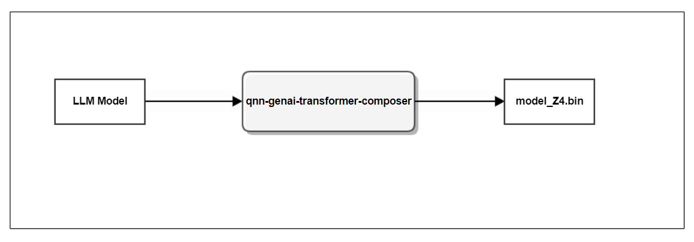

qnn-genai-transformer-composer¶
The qnn-genai-transformer-composer tool prepares a model for inference via Genie, but specifically for the Gen AI
Transformer Backend.

GenAITransformer Composer Tool¶
DESCRIPTION:
------------
Tool to convert a supported LLM model to a binary file consumable by Genie execution engine.
REQUIRED ARGUMENTS:
-------------------
--model <DIR> Path to the downloaded LLM model directory.
OPTIONAL ARGUMENTS:
-------------------
-h, --help Show this help message and exit.
--config_file <DIR> Path to the generic configuration.json
--quantize {Z4,Z4_FP16,Z8,Q4} <VAL> Quantization type. If not specified, output format will be FP32.
Q4 uses a block of 32 elements. It provides the highest accuracy,
yet with lowest performance. Z4 and Z8 uses block of 128 elements.
The accuracy is sufficient for most models, with Z8 giving highest
performance.
--outfile OUTFILE <FILE> Path to write to; default: path provided in --model parameter.
--lora <DIR> Path to the lora adapter model directory, if specified then --quantize
option should not be specified.
--lm_head_precision <VAL> Precision for lm_head (output.weight) tensor. "FP_32" supported.
--export_tokenizer_json Exports the tokenizer model to HuggingFace Fast Tokenizer .json file.
The tokenizer.json file will be written to the path specified via the
--outfile parameter.
--dump_lut Dumps the token embedding weight as LUT.bin in the path specified via
the --outfile parameter.
Note
The --export_tokenizer_json option supports tokenizers for QWen-1, BaiChuan-1, Mistral, wt19-en-de and mx-translation models.
Note
If the --config_file option is not provided, the composer will access the config.json file in the downloaded model path given in --model option and accordingly will fetch the generic configuration file from QNN_SDK_ROOT path.
Generic Configuration File Explanation¶
Configuration.json will be a JSON file that will provide information about the model to the qnn-genai-transformer-composer, to prepare the model for inferencing via Genie.
Model Params Description¶
There are 26 static params of the model under 5 categories of params:
General parameters provide global information about the model.
Size parameters inform about the main model dimensions.
Architecture parameters provide information about the transformer control flow.
Operation parameters conveys operator details.
Tensor parameters provide details about the model tensors.
Param-Name |
DataType |
Param-Description |
Optional /Mandatory |
Possible values |
|---|---|---|---|---|
general.name |
String |
Model name in a readable form |
Mandatory |
|
general.architecture |
String |
Model global architecture |
Optional |
generic , llama, qwen, gpt2. Default: generic |
general.tokenizer |
String |
Tokenizer to use |
Optional |
none, gpt2, llama, tiktoken. Default: none |
general.alignment |
Integer |
Byte alignment for each tensor within the file |
Optional |
Default: 32 |
general.tokenizer.bos_token_id |
Integer |
BOS token ID |
Mandatory with Encoder-Decoder Model |
|
general.hf_hub_model_id |
String |
specifying model identifier in the HuggingFace repository |
Optional |
|
general.output |
String |
Model’s output |
Optional |
logits, embeddings. Default: logits |
size.vocabulary |
Integer |
Vocabulary size. |
Mandatory |
|
size.context |
Integer |
Maximum number of tokens the transformer will consider to predict the next token |
Mandatory |
|
size.embedding |
Integer |
Length of the embedding vector representing a token |
Mandatory |
|
size.embedding_per_head |
Integer |
Length of the embedding vector per head |
Optional |
Default: size.embedding / architecture.num_head |
size.feedforward |
Integer |
Size of the inner layer within the feed-forward network |
Mandatory |
|
architecture.num_decoders |
Integer |
Number of decoder layers |
Mandatory |
|
architecture.num_heads |
Integer |
Number of attention heads |
Mandatory |
|
architecture.num_kv_heads |
Integer |
Number of attention heads for keys-values incase of grouped query attention |
Optional |
Default: architecture.num_heads |
architecture.connector |
String |
How the attention and feed-forward networks are connected to each other |
Mandatory |
sequential, parallel |
architecture.gating |
String |
Gating type of the transformer. |
Mandatory |
gated, fully-connected |
operation.normalization |
String |
Normalization operator |
Mandatory |
layernorm, RMS-norm |
operation.activation |
String |
Non-linear activation operator for feed-forward |
Mandatory |
ReLU, GeLU, SiLU |
operation.positional_embedding |
String |
How positional information is handled |
Mandatory |
WPE, RoPE |
operation.rope_num_rotations |
Integer |
Number of elements to be affected by the rope operation |
Mandatory with “RoPE” |
|
operation.rope_complex_organization |
String |
How RoPE real and imaginary parts are expected to be organized in memory |
Mandatory with “RoPE” without “tensor.kq_complex_organization” specified |
AoS, SoA |
operation.rope_scaling |
Floating point |
Scaling factor for the RoPE operator |
Optional with “RoPE” |
Default: 10000.0f |
operation.rope.scaling.config |
Dictionary |
RoPE Scaling config |
Optional with “RoPE” |
|
operation.rope.scaling.factor |
Array |
An array of rope scaling factors |
Optional |
|
operation.normalization_epsilon |
Floating point |
Epsilon for the normalization operator |
Optional |
Default: 0.000001 |
operation.attention_mode |
String |
How the model attends to previous and future tokens |
Optional |
causal, bidirectional. Default: causal |
operation.word_position_embedding_offset |
Integer |
Offset for WPE |
Mandatory with “WPE” if not 0 |
|
tensor.layer_name |
String |
The layer name prefix for layer tensors. “(d+)” regex for the layer number. |
Mandatory |
|
tensor.kq_complex_organization |
String |
If RoPE real and imaginary parts are expected to be SoA convert them to AoS |
Mandatory with “RoPE” without “operation.rope_complex_organization” specified |
SoA |
name |
String |
Tensor name used in the model file |
Mandatory |
|
transposed |
Boolean |
Whether the tensor is transposed or not with respect to the standard matrix multiplication convention in linear algebra when the matrix is at the rigth hand side of the matrix multiplication |
Optional |
Default: False |
scale |
Floating point |
Multiplicative coefficient to be applied to each tensor element before processing |
Optional |
Default: 1.0 |
offset |
Floating point |
Additive coefficient to be applied to each tensor element before processing |
Optional |
Default: 0.0 |
Model Tensor Description¶
Tensor normalized names are of the form tensor.identifier_weight and tensor.identifier_bias where “identifier” is one of the following:
Tensor name |
Tensor Type |
Description |
|---|---|---|
embedding_token |
Model Tensor |
Word token embedding tensor |
embedding_position |
Model Tensor |
Word position embedding tensor (not expected with “RoPE”) |
embedding_token_type |
Model Tensor |
Segment distinction within the input sequence |
embedding_normalization |
Model Tensor |
Embedding normalization tensor (expected with “sequential_post_layer_normalization”) |
attention_normalization |
Layer Tensor |
Attention input normalization tensor |
attention_q |
Layer Tensor |
Attention query tensor |
attention_k |
Layer Tensor |
Attention key tensor |
attention_v |
Layer Tensor |
Attention value tensor |
attention_qkv |
Layer Tensor |
Fused attention query-key-value tensor |
attention_output |
Layer Tensor |
Attention output or projection tensor |
cross_attention_normalization |
Layer Tensor |
Cross Attention normalization tensor |
cross_attention_q |
Layer Tensor |
Cross Attention query tensor |
cross_attention_k |
Layer Tensor |
Cross Attention key tensor |
cross_attention_v |
Layer Tensor |
Cross Attention value tensor |
cross_attention_output |
Layer Tensor |
Cross Attention output or projection tensor |
feedforward_normalization |
Layer Tensor |
Feed-forward input or post-attention normalization tensor (not expected when connector is “parallel”) |
feedforward_gate |
Layer Tensor |
Feed-forward gate or fully-connected layer tensor |
feedforward_up |
Layer Tensor |
Feed-forward up tensor (not expected with “fully-connected”) |
feedforward_up_gate |
Layer Tensor |
Feed-forward up and gate tensor (not expected with “fully-connected”) |
feedforward_output |
Layer Tensor |
Feedforward output or projection tensor or down tensor |
feedforward_output_normalization |
Layer Tensor |
Feedforward output normalization tensor |
output_normalization |
Model Tensor |
Output normalization tensor (not expected with “sequential_post_layer_normalization”) |
output |
Model Tensor |
Output tensor |
RoPE Scaling Config Description¶
The operation.rope.scaling.config key in the Model params table is a dictionary containing the keys depending on the RoPE type. Following section describes the keys for different rope types.
Rope Type llama3¶
Key |
Type |
Mandatory |
DefaultValue |
|---|---|---|---|
factor |
Floating point |
True |
|
high_freq_factor |
Floating point |
True |
|
low_freq_factor |
Floating point |
True |
|
original_max_position_embeddings |
Integer |
True |
|
type |
String |
True |
llama3 |
Rope Type yarn¶
Key |
Type |
Mandatory |
DefaultValue |
|---|---|---|---|
factor |
Floating point |
True |
|
original_max_position_embeddings |
Integer |
True |
|
attention_factor |
Floating point |
False |
|
beta_fast |
Floating point |
False |
32.0 |
beta_slow |
Floating point |
False |
1.0 |
type |
String |
True |
yarn |
Rope Type longrope¶
Key |
Type |
Mandatory |
DefaultValue |
|---|---|---|---|
long_factor |
Array |
True |
|
short_factor |
Array |
True |
|
original_max_position_embeddings |
Integer |
True |
|
attention_factor |
Floating point |
False |
|
type |
String |
True |
longrope |